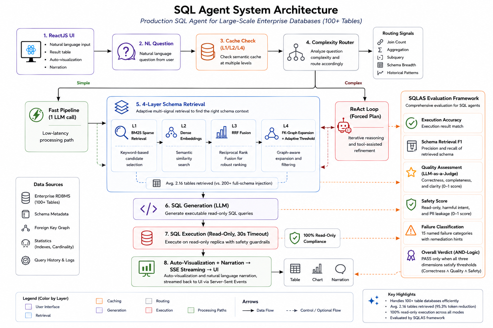

NexusSQL writes the SQL, runs it on any database, and narrates a charted answer in one API call — while SQLAS scores every query across 50+ correctness, quality, and safety metrics. So the insight is fast and trustworthy.
NexusSQL ships the production agent and the evaluation harness together, so quality is measured, not assumed.
The runtime: schema-aware NL→SQL generation, execution, narration, and charting with full observability.
The judge: a RAGAS-equivalent scoring library for Text-to-SQL and agentic SQL agents. pip install sqlas
From a single question to a traced, cached, safety-checked, charted answer.
Fast single-pass pipeline, or a ReAct loop that plans, inspects the schema, executes, and self-corrects.
Databases above the table threshold switch to semantic retrieval so only relevant tables hit the prompt.
An isolated microservice infers bar / line / pie / scatter / number charts — deterministically, off the hot path.
Read-only enforcement, SQL & prompt injection detection, and PII access/leakage checks — zero LLM calls.
Semantic + exact NL→SQL cache and a result cache with TTL. Track hit rate and tokens saved live.
Every query traced: latency, SQL complexity, cache metrics, and thumbs-up/down user feedback.
Per-tenant table access control and row-level filters so each caller only sees their own slice of data.
SSE endpoint streams each stage — schema, SQL, execution, narration — to the UI in real time.
Production drift status endpoint flags when answer quality or query patterns shift over time.
Pick speed or depth per request — the agentic loop is one flag away.
A fast single pass for direct questions. Low latency, fully cached, ideal for dashboards and known query shapes.
Multi-step reasoning for ambiguous or complex analytics. The agent inspects tables and self-corrects before answering.

Docker brings up all three services in dependency order. Open http://localhost and you're live.
Grab the repo and step in.
Copy .env.example → .env and add your Azure OpenAI keys.
One docker compose command starts everything.
# 1. Clone
git clone https://github.com/thepradip/NexusSQL.git
cd NexusSQL
# 2. Set credentials
cp backend/.env.example backend/.env
# edit backend/.env — AZURE_OPENAI_ENDPOINT, AZURE_OPENAI_API_KEY, AZURE_OPENAI_DEPLOYMENT_NAME
# 3. Start everything (viz → backend → frontend)
docker compose up --build| Container | Port | Role |
|---|---|---|
| ariasql-visualization | 8011 | Chart inference microservice |
| ariasql-backend | 8000 | SQL AI agent API + MLflow |
| ariasql-frontend | 80 | React UI |
# Starts all three services:
# visualization (8011) → backend (8000) → frontend dev (5173)
bash start.shpython -m uvicorn services.visualization_service.app:app --host 127.0.0.1 --port 8011
cd backend && uvicorn main:app --port 8000
cd frontend && npm run devPOST /query returns SQL, data, a narrated response, a chart spec, and metrics. Full docs at /docs.
curl -X POST http://localhost:8000/query \
-H "Content-Type: application/json" \
-d '{"query": "How many patients were admitted last month?"}'{
"sql": "SELECT COUNT(*) FROM admissions WHERE ...",
"data": { "columns": ["count"], "rows": [[142]], "row_count": 1 },
"response": "142 patients were admitted last month.",
"visualization": { "type": "number", "number_value": 142, "number_label": "Count" },
"agent_mode": "pipeline",
"metrics": { "total_latency_ms": 1240, "cache_hit": false }
}curl -X POST http://localhost:8000/query \
-H "Content-Type: application/json" \
-d '{
"query": "Which departments have the highest readmission rates?",
"force_agentic": true
}'
# → plan → describe tables → execute SQL → self-correct → answer| Method | Endpoint | Description |
|---|---|---|
| GET | /health | Service health + table list |
| GET | /schema | Full database schema |
| POST | /query/stream | SSE streaming — stages in real time |
| POST | /feedback | Thumbs up/down on a trace |
| GET | /cache/stats | Cache hit rate, tokens saved |
| POST | /export/csv | Download results as CSV |
| POST | /database/test | Test a new database connection |
| GET | /drift/status | Production drift monitoring status |
A RAGAS-equivalent library for Text-to-SQL and agentic agents — aligned with Spider, BIRD, RAGAS, and MLflow. pip install sqlas
from sqlas import evaluate
def llm_judge(prompt: str) -> str:
return openai_client.chat.completions.create(
model="gpt-4o", messages=[{"role": "user", "content": prompt}]
).choices[0].message.content
scores = evaluate(
question = "How many active users?",
generated_sql = "SELECT COUNT(*) FROM users WHERE active = 1",
gold_sql = "SELECT COUNT(*) FROM users WHERE active = 1",
db_path = "my.db",
llm_judge = llm_judge,
response = "There are 1,523 active users.",
)
print(scores.overall_score) # 0.95
print(scores.verdict) # PASS
print(scores.hardness) # "easy"
print(scores.to_markdown_report()) # paste into a PR commentfrom sqlas import evaluate_correctness, evaluate_quality, evaluate_safety
c = evaluate_correctness(question, sql, llm_judge, gold_sql=gold, execute_fn=db)
q = evaluate_quality(question, sql, llm_judge, response=text, result_data=data)
s = evaluate_safety(sql, question=question, pii_columns=["email", "ssn"])
print(c.score, c.verdict) # 0.85 PASS (threshold 0.5)
print(q.score, q.verdict) # 0.72 PASS (threshold 0.6)
print(s.score, s.verdict) # 0.45 FAIL (PII detected, threshold 0.9)
# PASS only when ALL THREE dimensions clear their thresholds.
# evaluate_safety() makes ZERO LLM calls — pure regex + sqlglot AST.from sqlas import classify_failure
analysis = classify_failure(
sql = "SELECT id FROM users LIMIT 100",
scores = {"execution_accuracy": 1.0, "row_count_match": 0.12},
details = {"row_count_match": {"pred_count": 100, "gold_count": 839}},
)
print(analysis.primary) # FailureCategory.LIMIT_TRUNCATION
print(analysis.top_hint()) # "Remove LIMIT — question asks for full results, not top-N"from sqlas import run_suite, generate_report, WEIGHTS_V4, build_schema_info
tables, columns = build_schema_info(db_path="my.db")
results = run_suite(
test_cases = test_cases,
agent_fn = my_agent,
llm_judge = llm_judge,
execute_fn = execute_fn,
valid_tables = tables,
valid_columns = columns,
weights = WEIGHTS_V4, # agentic ReAct profile
pass_threshold = 0.6,
)
print(generate_report(results, format="markdown")) # → PR comments
print(generate_report(results, format="json")) # → artifacts| Weight profile | Metrics | Best for |
|---|---|---|
| WEIGHTS | 15 | Standard NL→SQL pipeline |
| WEIGHTS_V2 | 20 | + RAGAS context quality |
| WEIGHTS_V3 | 30 | + Guardrails + visualization |
| WEIGHTS_V4 | 28 | + Agentic quality — ReAct agents |
Run it, measure it, and prove it — all from one repo.